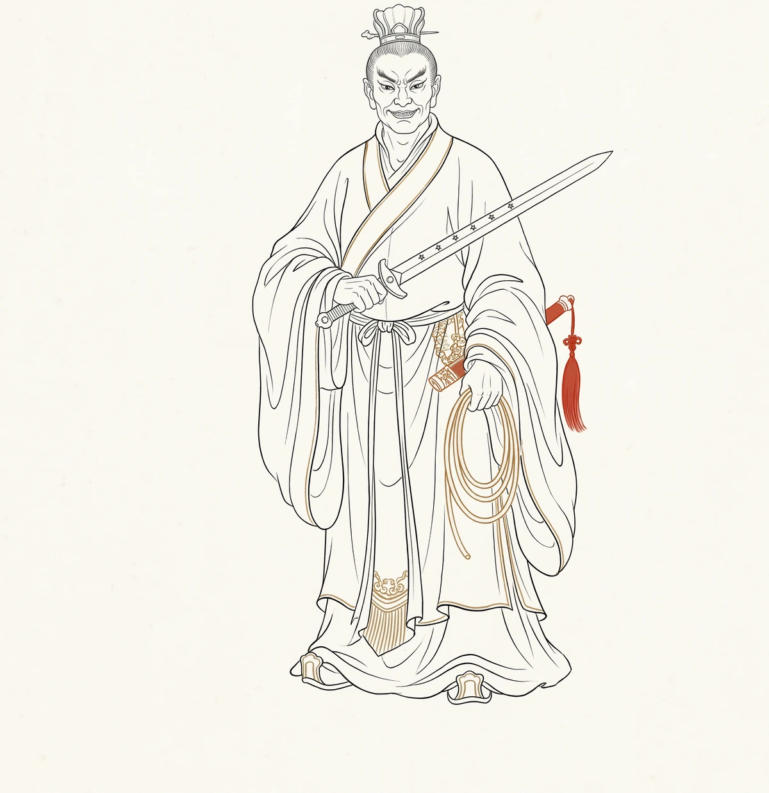

银角大王

轨标：教学讲解 人物类别：妖魔 · 神仙童子下界 数据指标：出场 4 回（第 32-35 回），总提及 ~70 次（待全量数据验证） 核验状态：未核验
一、出处与身世
银角大王是金角大王的弟弟，同为太上老君看炉的童子。他与金角是西游诸妖中唯一一对"孪生妖怪"——同出同回，同被收回。 但他们的性格截然不同：金角谋划，银角执行；金角持重，银角性急。
来历
原著第32回银角与金角对话（line 2702）：
银角道："若是吃了他肉就可以延寿长生，我们打甚么坐，立甚么功，炼甚么龙与虎，配甚么雌与雄？只该吃他去了。等我去拿他来。" 金角道："兄弟，你有些性急，且莫忙着。"
这一段对话极传神——银角大王是"急性子"，金角大王是"慢性子"。 兄弟二人的对照，是西游诸妖中最完整的一次"性格镜像"。
与其他妖怪的对照
- 红孩儿：稚气与杀器错位
- 黄袍怪：神籍下凡，为情
- 灵感大王：佛门宠物，听经成妖
- 银角大王：道门童子，性急成妖
他是西游妖怪谱系里最"执行型"的一类——也是最"易骗"的一类。 他的全部悲剧来自"性急"二字——金角让他"莫忙"，他偏偏要去巡山；金角让他"照验图像"，他偏偏轻敌冒进。
二、性格弧线
第一阶段：性急之始（第 32 回）
银角大王一听"唐僧肉可延寿长生"，立刻要"去拿他来"。他的全部动机就是"性急"——还没谋划好就要执行。 这一笔与红孩儿"赤身骗僧"形成对比：红孩儿精于伪装，银角大王粗于执行。
第二阶段：移山之诡（第 33 回）
银角大王巡山遇悟空，用"移山倒海"之法，把须弥山、峨眉山、泰山三座大山压在悟空背上。这一招极狠——他不正面交锋，他用"山"压人。
银角大王念动真言，把须弥山遣在左，峨眉山遣在右，泰山遣在前，三山压住行者。
但悟空有"齐天大圣"的旧基业，山压不住他——他召来山神土地，把山移开。这一笔极讽刺：银角大王以为"山"能压住一切，可悟空的"齐天"旧业比山还重。
第三阶段：被骗之辱（第 33 回）
银角大王变做一个受伤的道士，骗唐僧搭救。又用紫金红葫芦叫悟空的名字——"你叫我，我就答应；我答应，就被吸进去"。悟空被骗，被吸进葫芦。
但悟空在葫芦里撒尿——把葫芦污了，银角大王只得打开葫芦，悟空趁机逃脱。这一笔极荒诞——五件法宝中最重要的紫金红葫芦，被一泡猴尿污了。 这是西游对"法宝"最直接的戏谑——再厉害的法宝，也怕一泡尿。
第四阶段：失宝之败（第 34 回）
银角大王被悟空用"假葫芦"骗走了紫金红葫芦和羊脂玉净瓶。这是西游诸妖中"被骗得最惨"的一次——他主动交出法宝，还以为自己赢了。 银角大王的"性急"让他无法识别假货——他急着要看悟空被吸进去，结果自己被骗。
第五阶段：被收之归（第 35 回）
太上老君下界，把银角大王与金角大王一同收回。银角大王被收时，毫无反抗——他像灵感大王一样"温驯归化"。 听见主人的声音，他就回来了。
三、关键情节
| 回目 | 事件 | 性格体现 |
|---|---|---|
| 32 | 银角性急要拿唐僧，被金角劝住 | 性急初现 |
| 32 | 带图像巡山，遇悟空变化 | 执行冒进 |
| 33 | 移三山压悟空，被悟空召山神移开 | 仗术欺人 |
| 33 | 用紫金红葫芦吸悟空，被猴尿污之 | 法宝被污 |
| 34 | 被悟空用假葫芦骗走真葫芦和净瓶 | 被骗之辱 |
| 35 | 太上老君下界收回银角大王 | 温驯归化 |
四、象征意义
一、修行试金石（考"耐心"）
银角大王不考悟空的武力——悟空武力胜他。他考的是"耐心"二字。银角大王的全部失败来自"性急"——急着巡山、急着压人、急着吸人、急着看效果。 这一笔是对"急性子"最直接的批判——急则失察，急则被骗。
二、移山的隐喻
银角大王移三山压悟空。这一笔极隐微——他用"山"压人，悟空用"召山神"移山。 表面是法术对决，内里是"权力结构"的对决——银角大王借"山"之力，悟空借"神"之力。山是死的，神是活的。借死物者败，借活物者胜。
三、被尿污的隐喻
紫金红葫芦被悟空一泡猴尿污了。这一笔极荒诞——最神圣的法宝，被最污秽的东西毁了。 这是西游对"神圣"最直接的戏谑——再厉害的法宝，也怕一泡尿；再庄严的仪式，也怕一个"污"。神圣与污秽，往往只隔一层皮。
五、历史原型与演变
一、佛教魔概念
佛教中"魔"本义为"杀者"。银角大王之"魔"，是"性急之魔"——他障碍的不是悟空的剑，是悟空的"耐心"。 悟空在葫芦里撒尿，是"以污破净"的最直接演绎——以不洁破洁净，以荒诞破庄严。（参 学术论文索引·P02 维摩诘经心净）
二、《大唐三藏取经诗话》
取经诗话中并无银角大王。深山遇妖的母题虽有，但"老君童子下界""移三山压人""紫金红葫芦被猴尿污"的核心冲突，是世德堂本独创。
三、元杂剧
元杂剧《西游记》中已有"妖怪用宝"的桥段，但与"太上老君童子""移山压人"的道门家世关联，是明代定稿后才完成的。
四、世德堂本定稿
明万历二十年（1592）世德堂本确立了银角大王的最终形象：平顶山莲花洞、移三山压悟空、紫金红葫芦被猴尿污、被太上老君收回。这是明代小说中最完整的一次"性急批判"——急则失察，急则被骗。
五、现代演变
- 1986 央视版《西游记》：银角大王成为"急性子妖怪"的大众原型，形象强化其"性急冒进"
- 2010 年代后：网络解读渐多，银角大王被赋予"执行型二代"的隐喻——一个靠主人家装备、性急冒进的童子
- 当代折射：一个"性急执行型"的角色，在今天的语境里有了新的指涉——从"急性子"到"冒进执行"到"装备依赖症"，银角大王的影子从未远离
银角大王的悲剧，从明代到当代只换了名字——从"性急失察"到"冒进被骗"。这中间的不变，是某种"急则失智"的长久警示。
六、延伸思考
- 银角大王移三山压悟空，为何不直接一棒打死？是因为他想"玩"，还是因为他知道自己打不过？
- 紫金红葫芦被猴尿污——这一笔是戏谑，还是批判？神圣与污秽，往往只隔一层皮
- 银角大王与金角大王是孪生兄弟，为何性格截然不同？兄长持重、弟弟性急，这种结构与明代"父子专权"有何相通？
- 一个"性急"的妖怪，被太上老君收回后是否还会"性急"？主人的收宠，是惩罚，还是保护？